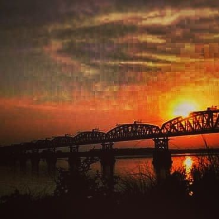

Hardinge Bridge & Lalon Shah Bridge
Hardinge Bridge is a steel railway bridge over the river Padma located at Paksey, Ishwardi, Pabna in western Bangladesh. It is named after Lord Hardinge, who was the Viceroy of India from 1910 to 1916. The bridge is 1.8 kilometres (1.1 mi) long.
Construction of the through truss bridge began in 1910, though it was proposed at least 20 years earlier. It was constructed by Braithwaite and Kirk Company based on design of Sir Alexander Meadows Rendel. It was completed in 1912, and trains started moving on it in 1915.
The construction of a railway bridge over the Padma was proposed in 1889 by the Eastern Bengal Railway for easier communication between Calcutta and the then Eastern Bengal and Assam. In 1902, Sir FJE Spring prepared a report on the bridge. A technical committee reported that a bridge could be constructed at Sara crossing the lower Ganges between the Paksey and Bheramara Upazila stations on the broad gauge railway from Khulna to Parbatipur Upazila. The construction of the bridge started in 1910 and finished two years later. The bridge comprises 15 steel trusses. The main girders are modified "Petit" type.
The most difficult task of the operation was to prevent bank erosion and to make the river flow permanently under the bridge. For this, two guide banks of the "Bell-bund" type named after J. R. Bell were built on either side, each extending 910 metres (3,000 ft) upstream and 300 metres (1,000 ft) downstream from the bridge. The ends of the river banks were curved inward and heavily pitched with stone.
Hardinge Bridge was severely damaged during the Liberation War of Bangladesh of 1971. It happened on 13 December 1971, when the Indian Air Force plane bombed on the 4th guarder from the Paksey side. As the Pakistani army was on retreat towards Jessore (their last stronghold) Hardinge Bridge was strategically very important. The allied force damaged the bridge. The Japanese Government helped to reconstruct the bridge.
It is the second largest railway bridge in Bangladesh. Another bridge named Lalon Shah Bridge for road transport beside the Hardinge Bridge has recently been constructed.
Lalon Shah Bridge, locally known as Pakshey Bridge is a road bridge in Bangladesh over the river Padma, situated between Ishwardi Upazila of Pabna on the east, and Bheramara Upazila of Kushtia on the west. Named after early 19th-century mystic poet Lalon Shah of Chhewuriya, Kushtia District, the bridge was completed in 2004.

The bridge is 1,800 metres (5,900 ft) long and is the second longest road bridge of the country, after Bangabandhu Bridge. It is on the National Highway N704 N704. It provides important road connection to Mongla port of Khulna District in the south from Rajshahi division and Rangpur division, the northern part of Bangladesh. It is situated parallel to and south (downstream) of Hardinge Bridge.